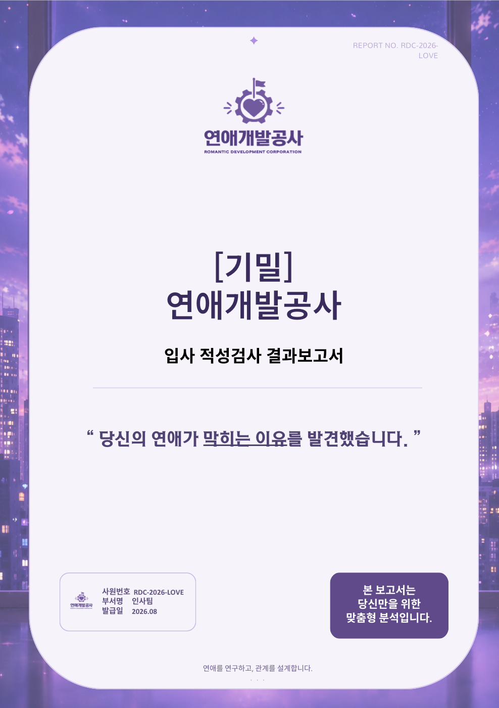
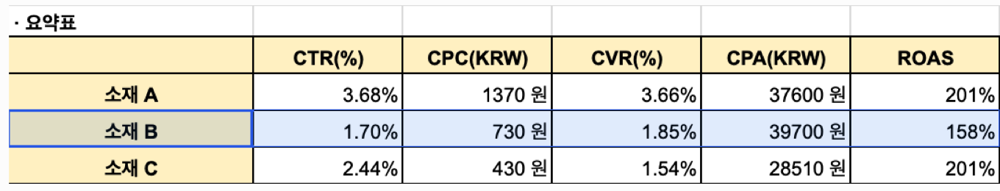
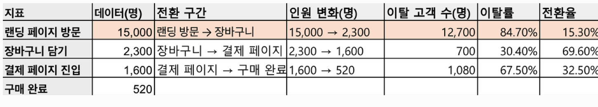

송유나CONTENT MARKETER
송유나 · 신입 콘텐츠 마케터
개인 SNS 팔로워 1,647명대표 릴스를 통한 팔로우 314건2026.09.11 기준
계정 프로필·Instagram 릴스 인사이트 기준
6.4% → 13.4%팀 캠페인 · 링크 클릭 대비 고유 리드 확보율1차 → 2차 · CPL 27.1% 감소
광고 영상 2편 편집연애개발공사개인 편집 기여도 90%
콘텐츠 반응을 살펴 후킹을 다듬고,약 112만 조회 릴스를 만들었습니다.
반려묘 SNS의 소재 발굴부터 촬영·편집·업로드까지 직접 운영했습니다.
KDT 디지털 마케팅 과정에서는 생성형 AI를 활용한 콘텐츠 기획·제작과 광고·고객 행동 데이터 분석을 실습했습니다. 개인 계정에서 쌓은 영상 제작 경험을 펫 브랜드 서포터즈 콘텐츠와 팀 광고 영상 제작에 활용했습니다.
계정 프로필·Instagram 릴스 인사이트 기준
TOOLS & SKILLS
활용 도구
숙련도는 아래에 적은 업무 범위에 한정한 자기평가입니다.
- 기초 활용
- 안내나 예시를 참고해 정해진 작업 수행 가능
- 프로젝트 적용
- 과제·프로젝트에서 결과물을 만들었고 작업 방법 설명 가능
- 독립 활용
- 기재한 업무 범위를 혼자 수행하고 수정·보완 가능
콘텐츠 제작
 CapCut독립 활용릴스 컷 편집·자막·사운드 구성
CapCut독립 활용릴스 컷 편집·자막·사운드 구성 Figma
Figma Canva
Canva- Google Flow프로젝트 적용캠페인용 AI 영상 소스 제작
광고·데이터 분석
 GA4프로젝트 적용데모 계정의 유입 채널 비교·탐색 리포트 활용
GA4프로젝트 적용데모 계정의 유입 채널 비교·탐색 리포트 활용 Meta Ads
Meta Ads- Google Sheets프로젝트 적용광고 지표 계산·소재 비교·퍼널 이탈 분석
 Excel
Excel
문서·협업
 Notion
Notion- PowerPoint
- Word
 Slack
Slack
SELECTED PROJECTS
프로젝트 상세
기획 배경부터 역할, 실행, 결과와 배운 점까지 한 페이지에서 확인할 수 있습니다.
2030 연애 고민층의 리드 확보를 위한
‘연애개발공사’ Meta 잠재고객 캠페인
Meta 광고를 통해 잠재고객 정보(리드)를 확보하는 KDT 디지털 마케팅 과정의 최종 팀 프로젝트입니다.
팀에서 주제와 타깃을 선정하고, 정보성 자료·광고 소재 제작부터 실제 광고 집행과 리드 수집까지 수행했습니다.
01. 프로젝트 기본 정보
진행 방식
1차 광고 집행 → 성과 분석 → 콘텐츠·전환 과정 개선 → 2차 집행 및 결과 비교
02. 제작 결과물
영상 A · 관찰형 광고
직장인의 반복되는 일상과 연애 고민을 담은 영상
- 담당 범위
- CapCut 기반 영상 편집
영상 B · 웹툰형 광고
‘연애개발공사’ 회사 세계관을 활용한 영상
- 담당 범위
- CapCut 기반 영상 편집
유형별 분석 PDF

연애 고민에 대한 유형별 분석·솔루션·데이트 정보를 담은 보고서
- 담당 범위
- 콘텐츠 구성·초안 제작 참여
최종 PDF는 팀 공동 산출물
PDF 제작 기여도 40% · 광고 영상 2편 편집 기여도 90%
03. 배경·목표
시장·타깃 조사를 바탕으로, 연애 의향은 있지만 자신의 관계 문제와 해결 방향을 구체화하기 어려운 2030에 주목했습니다.
유형별 분석·솔루션·데이트 정보를 담은 PDF를 제공하고, 자체 랜딩페이지를 통한 잠재고객 리드 확보를 목표로 했습니다.
04. 액션 플랜
팀 전략 — ‘연애 × 자기이해’ 테스트와 PDF 연결
팀은 연애 고민을 점검하는 테스트와 유형별 분석 PDF를 연결하고, 서로 다른 콘셉트의 광고 영상으로 관심을 유도했습니다.
PDF는 이메일 제출의 혜택으로 제시해 리드 확보로 이어지도록 구성했습니다.
내 실행 — PDF 콘텐츠 구성과 광고 영상 편집
① PDF 콘텐츠 구성·초안 제작
기여도 40%생성형 AI를 활용해 유형별 분석·솔루션·데이트 정보를 정리하고, PDF의 콘텐츠 구성과 초안 제작에 참여했습니다.
② 광고 영상 2편 편집 및 2차 집행용 수정
편집 기여도 90%다큐형·웹툰형 광고 영상 2편을 CapCut으로 편집했습니다. 1차 집행 후 팀에서 결정한 오프닝 추가 방향을 반영해 소재 2의 도입부를 수정하고, 2차 집행용 영상으로 완성했습니다.
1차 광고 집행 후 개선
팀 실행1차 집행에서 테스트 시작률 22.7%, 시작 후 완료율 88.7%를 확인해 테스트 진입 단계를 우선 개선 대상으로 설정했습니다. 소재별 리드 유입 경로를 확인할 수 있도록 측정 구조도 보완했습니다.
| 구분 | 2차 개선 내용 |
|---|---|
| 랜딩페이지 |
|
| 광고 소재·게재 |
|
| 측정 |
|
오프닝 추가 방향: 팀 결정 · 수정 편집: 본인 수행
05. 1·2차 광고 성과 비교
CTR은 하락했지만, 리드 확보율과 비용 효율은 개선
아래 수치는 개인 성과가 아닌 팀 캠페인의 1·2차 집행 결과입니다.
| 지표 | 1차 | 2차 | 증감 | 증감률 |
|---|---|---|---|---|
| 링크 클릭 대비 고유 리드 확보율 | 6.4% | 13.4% | +7.0%p | +109.4% |
| 고유 리드 수 | 34명 | 61명 | +27명 | +79.4% |
| 리드당 비용(CPL) | 2,914원 | 2,124원 | −790원 | −27.1% |
| 테스트 시작률 | 22.7% | 25.1% | +2.4%p | +10.6% |
| 링크 클릭률(CTR) | 5.38% | 3.37% | −2.01%p | −37.4% |
| 광고 지출 | 99,087원 | 129,551원 | +30,464원 | +30.7% |
리드 확보율 = 고유 리드 수 ÷ 링크 클릭 수 × 100
CPL = 광고 지출 ÷ 고유 리드 수
자료 프로젝트 1·2차 광고·리드 집계표
증감은 비율 지표의 경우 %p, 인원은 명, 금액은 원으로 표시했습니다. 증감률은 1차 대비 변화율(%)입니다.
변화량은 표에 표시된 값을 기준으로 계산했으며, 반올림 전 원자료로 계산한 값과 차이가 있을 수 있습니다.
06. 인사이트
클릭 반응과 최종 리드 전환을 함께 평가
2차 집행에서는 CTR이 하락했지만, 리드 확보율은 높아지고 CPL은 낮아졌습니다. 리드 확보 목적의 캠페인은 클릭 반응뿐 아니라 클릭 이후의 전환 효율까지 함께 평가해야 한다는 점을 확인했습니다.
소재별 성과를 비교할 측정 구조를 집행 전에 준비
1차에는 소재별 리드 유입 경로를 구분하지 못했지만, 팀이 추적 구조를 보완한 2차에는 소재별 CPL을 확인할 수 있었습니다. 광고 집행 전에 소재와 리드를 연결해 성과를 비교할 수 있도록 측정 구조까지 준비해야 한다는 점을 배웠습니다.
분석 한계
랜딩페이지·광고 소재·집행비가 동시에 변경되었기 때문에, 각 변화가 성과에 미친 영향을 따로 확인하지 못했습니다.
반려묘 SNS 콘텐츠 운영 및 펫 브랜드 협업
반려묘의 일상과 행동을 숏폼으로 기획하고, 촬영·편집·업로드와 계정 운영을 직접 수행했습니다. 개인 릴스 제작 경험을 바탕으로 펫 브랜드 서포터즈 콘텐츠도 제작했습니다.
SOCIAL CONTENT × PET BRANDS프로젝트 기본 정보
배리웨이 미국 신규 고객 유치 캠페인 기획
이미지·릴스·캐러셀 광고안 기획 · 실제 광고 미집행
AI VIDEO × AWARENESS CAMPAIGN프로젝트 기본 정보
미국 시장 진출을 가정해 이미지·릴스·캐러셀 광고안을 구성한 팀 프로젝트입니다. 그중 인지 단계의 릴스를 기획하고, Google Flow를 활용한 영상 소스 제작에 참여했습니다.
콘텐츠 제작 및 데이터 분석 실습
정보형 캐러셀 제작과 광고·고객 행동 데이터 분석, 두 가지 개인 과제
CONTENT DESIGN × DATA ANALYSIS펫프렌즈 정보형 캐러셀 기획·제작
고양이가 가구를 긁는 상황에서 출발해, 스크래칭 관련 정보와 스크래쳐 종류를 전달하고 펫프렌즈 서비스를 소개하는 캐러셀을 기획·제작했습니다.
기본 정보
보호자의 고민과 브랜드의 정보 교류 기능을 연결
관심 브랜드의 정보형 콘텐츠를 제작하는 과제에서 펫프렌즈를 선정했습니다. ‘반려동물 (헬스)케어 도우미’를 콘셉트로, 반려동물의 특성과 케어 정보를 찾아보며 자신의 반려동물에게 맞는 제품을 선택하려는 2030 보호자를 타깃으로 설정했습니다.
목표
고양이의 스크래칭 관련 정보와 스크래쳐 종류를 전달하고, 마지막 장에서 보호자 간 정보 교류가 가능한 커뮤니티 기능을 소개하고자 했습니다.
공감 상황에서 정보 제공, 브랜드 소개로 이어지는 7장 구성
브랜드·채널·타깃 분석과 레퍼런스 조사를 바탕으로 장표별 역할을 나누고, 사진과 소제목·본문을 조합해 내용을 구성했습니다.
- 1장표지와 후킹 문구
- 2장고양이가 가구를 긁는 보호자의 공감 상황
- 3~5장스크래칭 관련 정보
- 6장스크래쳐 종류 소개
- 7장펫프렌즈 서비스 소개와 CTA
추가 실행
카드뉴스와 함께 사용할 Instagram 캡션을 작성하고, 관련 정보를 접한 뒤 이동할 랜딩페이지를 선정했습니다.
정보형 캐러셀 7장과 게시용 캡션
보호자의 공감 상황에서 시작해 스크래칭 정보와 스크래쳐 종류를 전달하고, 브랜드 서비스와 후속 탐색을 안내하는 흐름으로 제작했습니다.
펫프렌즈 정보형 캐러셀 · 총 7장
화살표를 누르거나 옆으로 밀어 전체 콘텐츠를 확인하세요.
원본 제출 캡션
우리 고양이가 자꾸 가구나 소파를 긁어서 고민이신가요?
사실 고양이의 스크래칭은 단순히 발톱을 정리하는 행동만은 아니에요. 영역 표시, 스트레스 해소, 기분 전환처럼 고양이에게 꼭 필요한 본능적인 행동이랍니다. 그래서 스크래쳐가 부족하면 고양이는 대신 소파, 러그, 의자 같은 가구를 선택할 수 있어요. 우리집 가구도 지키고, 냥이의 본능도 건강하게 채워주고 싶다면 고양이에게 맞는 스크래쳐를 준비해보세요. 펫프렌즈에서 다양한 고양이 스크래쳐·박스 용품을 확인할 수 있어요.
캐러셀과 캡션 제작 완료 · 실제 운영 성과는 미측정
정보형 캐러셀 7장과 게시용 캡션, 연결 랜딩 선정안을 완성했습니다. 본 사례는 교육 과정의 기획·제작 과제로, 실제 브랜드 캠페인의 조회·클릭·구매 성과는 측정하지 않았습니다.
정보의 흐름과 후속 행동의 연결을 점검
기획에서 적용한 점
보호자의 공감 상황을 시작점으로 정보와 제품 종류를 순차적으로 전달하고, 마지막 장에서 브랜드의 커뮤니티 기능을 소개하도록 구성했습니다.
원본 제출 상태
- USP 분석과 기획 의도에는 커뮤니티 기능이 포함되어 있습니다.
- 마지막 카드는 ‘집사생활’에서 다른 보호자의 후기 확인을 안내합니다.
- 제출 PDF의 랜딩과 캡션은 스크래쳐 상품 카테고리로 연결됩니다.
포트폴리오 보완 방향
커뮤니티 기능을 강조하는 기획 의도를 유지하면서, CTA·캡션·랜딩을 스크래쳐 후기 탐색 방향으로 맞추는 보완 방향을 정리했습니다. 최신 자료에서 실제 적용이 확인되지 않아 완료된 보완본으로 표시하지 않습니다.
광고 성과 및 고객 행동 데이터 분석 실습
제공된 광고·고객 행동 데이터를 Google Sheets로 계산·비교하고, 소재 개선 우선순위와 퍼널 이탈 구간을 파악해 추가 검증 방향을 제안했습니다.
기본 정보
수치 비교에서 개선 우선순위와 확인할 가설 도출
광고 소재별 효율을 비교하고 고객 행동 단계에서 이탈이 큰 구간을 찾는 두 가지 데이터 분석 실습을 수행했습니다. 계산한 지표를 근거로 우선 검토할 대상과 추가 확인할 데이터를 정리했습니다.
분석 질문
- 사례 A — 어떤 광고 소재를 우선 개선하거나 중단 검토해야 하는가?
- 사례 B — 고객이 어느 단계에서 이탈하며, 원인을 확인하려면 무엇을 더 봐야 하는가?
지표 계산 → 비교 → 가설 검토 → 검증 방향 제안
사례 A. 소재별 성과 비교
제공된 소재 A·B·C의 데이터를 바탕으로 CTR·CPC·CVR·CPA·ROAS를 계산하고, 소재별 효율을 비교해 개선 우선순위를 판단했습니다.
사례 B. 고객 행동 퍼널 분석
랜딩 방문 → 장바구니 담기 → 결제 페이지 진입 → 구매 완료 순서로 단계별 인원과 이탈률·전환율을 계산했습니다. 제공된 원인 가설 중 적절한 가설을 선택하고 추가 검증 방향을 제안했습니다.
직접 계산한 지표 요약표와 퍼널 분석표
소재별 클릭·전환·비용 지표 비교

소재 B는 CTR 1.70%, CPA 39,700원, ROAS 158%로 세 소재 가운데 우선 개선 또는 중단 검토 대상으로 판단했습니다.
단계별 이탈·전환 구간 비교

랜딩 방문 15,000명에서 장바구니 담기 2,300명으로 이어지는 구간의 이탈률 84.7%를 가장 큰 이탈 구간으로 확인했습니다.
소재 B와 랜딩 방문 이후 구간을 우선 검토 대상으로 선정
사례 A. 소재 B 우선 개선 검토
소재 B는 CTR이 가장 낮고 CPA가 가장 높으며, ROAS도 다른 소재보다 낮았습니다. 이를 근거로 우선 개선하거나 중단을 검토할 소재로 선정했습니다.
사례 B. 랜딩 방문 → 장바구니 구간 우선 분석
랜딩 방문 15,000명 중 장바구니 담기로 이어진 인원은 2,300명이었습니다. 이 구간의 이탈률이 84.7%로 가장 높아 우선 분석 대상으로 선정했습니다.
- 랜딩 방문
- 15,000명
- 장바구니 담기
- 2,300명 · 이전 단계 대비 이탈률 84.7%
- 결제 페이지 진입
- 1,600명 · 이전 단계 대비 이탈률 약 30.4%
- 구매 완료
- 520명 · 이전 단계 대비 이탈률 67.5%
이는 제공 데이터에서 확인한 분석 결과이며, 개선안을 실행해 달성한 실적이 아닙니다.
문제 구간을 찾는 것과 원인을 검증하는 것을 구분
지표 비교를 통한 판단
소재별 클릭·전환·비용 지표를 함께 비교해, 어떤 소재를 먼저 검토할지 판단하는 근거를 정리했습니다.
추가 검증 제안
소재별 랜딩 방문과 장바구니 전환을 비교하고, 특정 소재에서 이탈이 높다면 광고 내용과 랜딩페이지의 일치 여부를 확인하도록 제안했습니다. 또한 스크롤 깊이·체류시간을 추가로 확인해 정보 구성의 개선 지점을 판단하도록 제안했습니다.
분석 한계
집계 데이터만으로 이탈 원인을 확정할 수 없으며, 제안한 개선안의 실행 효과는 검증하지 않았습니다.
EDUCATION
학력·교육
한국외국어대학교
태국어통번역학과
평균 학점 3.86 / 4.5
KDT 생성형 AI 기반 디지털 마케팅 전문가 양성 과정 5회차
생성형 AI와 Figma를 활용해 콘텐츠를 기획·제작하고, Meta Ads와 GA4를 활용한 데이터 분석을 실습했습니다.
RESUME
이력서
프로젝트와 학력은 위에서 자세히 소개하고, 그 밖의 활동과 경험을 정리했습니다.
ACTIVITIES & EXPERIENCE
활동과 경험
2026.07 — 09SUPPORTERS
카디날코리아 서포터즈 3기
개인 채널을 통해 제품 홍보 콘텐츠를 발행했습니다.
2025.01 — 05EXCHANGE STUDENT
Mahidol University 교환학생
전공 수업과 팀 프로젝트에 참여하고, International Day 한국 문화 부스 운영을 함께했습니다.
2023.08 — 12EXCHANGE STUDENT
Mahidol University 교환학생
전공·태국 문화 수업을 수강하고, 현지 초등학교에서 진행된 한국어 교육 봉사활동에 참여했습니다.
2022.02 — 05SUPPORTERS
매일주인공(비즈톡 주식회사) 서포터즈 1기
카카오톡 기반 방탈출 콘텐츠의 시나리오·문제·장면별 일러스트 초안을 기획·제작했습니다.
LANGUAGES
외국어
- 영어
- 일상 회화 가능
- 태국어
- 일상 회화 가능